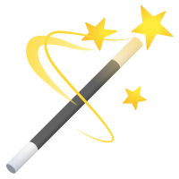

Harmonisation d'images
Cette application est basée sur l'article de Tan, J., Echevarria, J. I., & Gingold, Y. I. (2018)
“Palette-based image decomposition, harmonization, and color transfer”
Vous voulez nous aider ?
Donnez votre avis ici !
Accéder à l'application